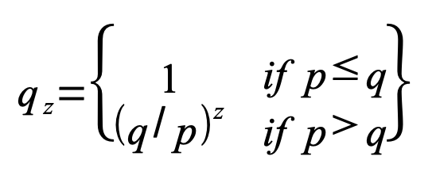

Dürüst zincir ile bir saldırgan zinciri arasındaki yarış Binom
Rastgele Yürüyüşü olarak nitelendirilebilir. Başarılı olma durumu
dürüst zincirin bir blok uzatılarak öncülüğünü 1 arttırması,
başarısızlık durumu ise saldırganın zincirinin bir blok uzatılarak
aralığın 1 azalmasıdır.
Bir saldırganın belirli bir açığı yakalama olasılığı Kumarbazın
İflası problemine benzemektedir. Sınırsız krediye sahip bir
kumarbazın oyuna borçla başladığını ve başabaş noktasına
gelebilmek için sonsuz sayıda deneme oyunu oynadığını varsayın.
Başabaş noktasına ulaşabilme olasılığını veya saldırganın dürüst
zinciri yakalayabilme olasılığını şu şekilde hesaplayabiliriz [8]:
p = dürüst bir düğümün sonraki bloğu bulma olasılığı
q = saldırganın bir sonraki bloğu bulma olasılığı
q
z
= saldırganın z blok geriden gelip yakalama ihtimali

P > q varsayımımıza göre, saldırganın yakalaması gereken blok
sayısı arttıkça, olasılık katlanarak düşmektedir. Bütün
olanaksızlıklarla beraber, saldırgan başlarda eğer bir dizi şanslı
hamle yapmazsa, kazanma ihtimali zincirin gerisinde kaldıkça hızla
azalmaktadır.
Şimdi yeni bir işlemdeki alıcının, gönderenin işlemi
değiştiremeyeceğinden yeterince emin olmadan önce ne kadar
beklemesi gerektiğini ele almaktayız. Gönderenin, alıcıyı belli
bir süre için kendisine ödeme yaptığına inandırmak isteyen, belli
bir zaman geçtikten sonra ise ödemeyi kendisine geri döndürmek
isteyen bir saldırgan olduğunu varsaymaktayız. Bu olduğunda alıcı
uyarılacaktır ancak gönderen bunun için artık çok geç olacağını
ümit etmektedir.
Alıcı yeni bir anahtar çifti oluşturur ve imzalamadan kısa bir
süre önce gönderene açık anahtarı verir. Bu, gönderenin önceden
sürekli olarak üstünde çalışarak, bloklardan oluşan bir zinciri
hazırlamasını ve bu zincirin öne geçtiği şanslı bir anda işlemi
çalıştırmasını önlemektedir. İşlem gönderildikten sonra dürüst
olmayan gönderici, işleminin alternatif bir versiyonunu içeren
paralel bir zincir üzerinde gizlice çalışmaya başlar.
Alıcı, işlem bir bloğa eklenene ve bunun arkasına z kadar blok
bağlanana kadar bekler. Saldırganın ne kadar ilerleme kaydettiğini
tam olarak bilmez ancak dürüst blokların blok başına beklenen
ortalama bir süre aldığını varsayarsak, saldırganın yaptığı
potansiyel ilerleme beklenen değerli bir Poisson dağılımı
olacaktır:
Saldırganın herşeye rağmen yetişebilme ihtimalini elde etmek için,
o noktadan zinciri yakalayabilme olasılığı ile elde edebileceği
her ilerleme için Poisson yoğunluğunu çarparız:
Sonsuz dağılım kuyruk toplamını almaktan kaçınmak için yeniden
düzenliyoruz...

 KİTABI
KİTABI


 Whatsminer M50S
Whatsminer M50S
 Antminer S21 Pro
Antminer S21 Pro
 Bitaxe 401 Supra
Bitaxe 401 Supra